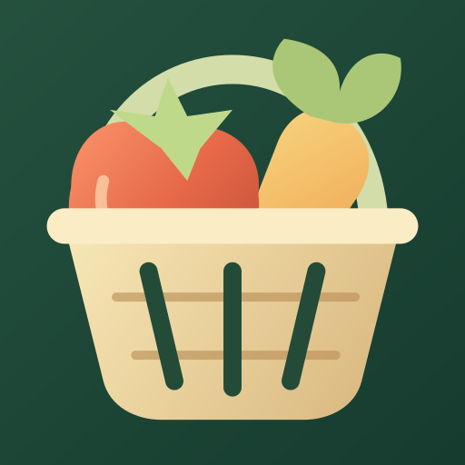

PlotPickings
Record allotment harvests, crop notes and garden spending. Compare seasons and export your records.
Track weight and item counts separately, save crop photos and keep a dated logbook. Values use the shop prices you enter. Spending and estimated values use pounds sterling (GBP).
All tools work offline. Banners support the free app; optional one-time ad removal is available through Google Play.
Support
Email fitandemapp@gmail.com. Include your app version and the steps needed to reproduce a problem. Please avoid sending private backups unless needed and requested.
Before changing phones or uninstalling, use More > Backup & export to save a ZIP backup. Restoring a ZIP replaces current records after confirmation. To restore ad removal, use the purchasing Google account and More > Ads & purchases > Restore purchase.
Privacy policy